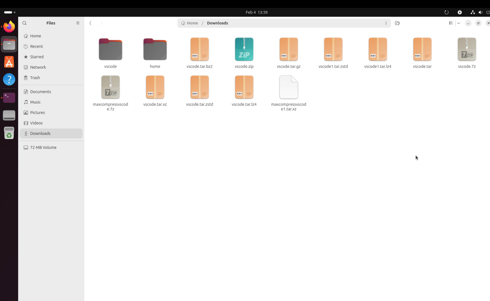
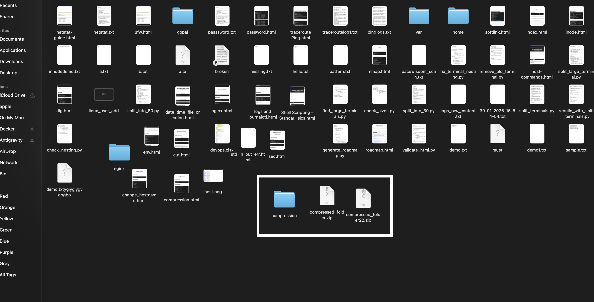

Creating tar.gz Archive
gopala@gopala-VMware20-1:~/systemd-216$ tar -zcf archive.tar.gz /home/gopala/Downloads/vscode tar: Removing leading `/' from member names gopala@gopala-VMware20-1:~/systemd-216$ tar -tf archive.tar.gz home/gopala/Downloads/vscode/ home/gopala/Downloads/vscode/code_1.108.2-1769004815_amd64.deb gopala@gopala-VMware20-1:~/systemd-216$ cd /home/gopala/Downloads gopala@gopala-VMware20-1:~/Downloads$ tar -zcf archive.tar.gz /home/gopala/Downloads/vscode tar: Removing leading `/' from member names gopala@gopala-VMware20-1:~/Downloads$ tar -zcf vscode.tar.gz /home/gopala/Downloads/vscode tar: Removing leading `/' from member names gopala@gopala-VMware20-1:~/Downloads$ rm archive.tar.gz
Installing bzip2
gopala@gopala-VMware20-1:~/Downloads$ tar -jcf vscode.tar.bz2 /home/gopala/Downloads/vscode tar: Removing leading `/' from member names /bin/sh: 1: bzip2: not found tar: vscode.tar.bz2: Wrote only 4096 of 10240 bytes tar: Child returned status 127 tar: Error is not recoverable: exiting now gopala@gopala-VMware20-1:~/Downloads$ sudo apt update sudo apt install bzip2 [sudo: authenticate] Password: Ign:1 file:/cdrom questing InRelease Err:2 file:/cdrom questing Release File not found - /cdrom/dists/questing/Release (2: No such file or directory) Hit:3 http://ports.ubuntu.com/ubuntu-ports questing InRelease Hit:4 http://ports.ubuntu.com/ubuntu-ports questing-updates InRelease Hit:5 http://ports.ubuntu.com/ubuntu-ports questing-backports InRelease Hit:6 http://ports.ubuntu.com/ubuntu-ports questing-security InRelease Get:7 https://packages.microsoft.com/repos/code stable InRelease [3,590 B] Err:7 https://packages.microsoft.com/repos/code stable InRelease The following signatures couldn't be verified because the public key is not available: NO_PUBKEY EB3E94ADBE1229CF Error: The repository 'file:/cdrom questing Release' no longer has a Release file. Notice: Updating from such a repository can't be done securely, and is therefore disabled by default. Notice: See apt-secure(8) manpage for repository creation and user configuration details. Warning: OpenPGP signature verification failed: https://packages.microsoft.com/repos/code stable InRelease: The following signatures couldn't be verified because the public key is not available: NO_PUBKEY EB3E94ADBE1229CF Error: The repository 'https://packages.microsoft.com/repos/code stable InRelease' is not signed. Notice: Updating from such a repository can't be done securely, and is therefore disabled by default. Notice: See apt-secure(8) manpage for repository creation and user configuration details. Notice: Some sources can be modernized. Run 'apt modernize-sources' to do so. Installing: bzip2 Suggested packages: bzip2-doc Summary: Upgrading: 0, Installing: 1, Removing: 0, Not Upgrading: 93 Download size: 34.8 kB Space needed: 191 kB / 7,087 MB available Get:1 http://ports.ubuntu.com/ubuntu-ports questing/main arm64 bzip2 arm64 1.0.8-6build1 [34.8 kB] Fetched 34.8 kB in 1s (32.7 kB/s) Selecting previously unselected package bzip2. (Reading database ... 153379 files and directories currently installed.) Preparing to unpack .../bzip2_1.0.8-6build1_arm64.deb ... Unpacking bzip2 (1.0.8-6build1) ... Setting up bzip2 (1.0.8-6build1) ... Processing triggers for man-db (2.13.1-1) ...
Creating bzip2, xz, zstd Archives
gopala@gopala-VMware20-1:~/Downloads$ tar -jcf vscode.tar.bz2 /home/gopala/Downloads/vscode tar: Removing leading `/' from member names gopala@gopala-VMware20-1:~/Downloads$ tar -Jcf vscode.tar.xz /home/gopala/Downloads/vscode tar: Removing leading `/' from member names gopala@gopala-VMware20-1:~/Downloads$ tar --zstd -cf vscode.tar.zstd /home/gopala/Downloads/vscode tar: Removing leading `/' from member names gopala@gopala-VMware20-1:~/Downloads$ tar --zip -cf vscode.zip /home/gopala/Downloads/vscode tar: unrecognized option '--zip' Try 'tar --help' or 'tar --usage' for more information. gopala@gopala-VMware20-1:~/Downloads$ tar -zip -cf vscode.zip /home/gopala/Downloads/vscode tar: Removing leading `/' from member names gopala@gopala-VMware20-1:~/Downloads$ tar -xz -cf vscode.xz /home/gopala/Downloads/vscode tar: You may not specify more than one '-Acdtrux', '--delete' or '--test-label' option Try 'tar --help' or 'tar --usage' for more information. gopala@gopala-VMware20-1:~/Downloads$ xz -cf vscode.xz /home/gopala/Downloads/vscode xz: Compressed data cannot be written to a terminal xz: Try 'xz --help' for more information. gopala@gopala-VMware20-1:~/Downloads$ tar -cf vscode.tar /home/gopala/Downloads/vscode tar: Removing leading `/' from member names gopala@gopala-VMware20-1:~/Downloads$ xz vscode.tar.xz xz: vscode.tar.xz: File already has '.xz' suffix, skipping
Installing lz4
gopala@gopala-VMware20-1:~/Downloads$ sudo apt install lz4 [sudo: authenticate] Password: Installing: lz4 Summary: Upgrading: 0, Installing: 1, Removing: 0, Not Upgrading: 93 Download size: 49.1 kB Space needed: 162 kB / 6,506 MB available Get:1 http://ports.ubuntu.com/ubuntu-ports questing/universe arm64 lz4 arm64 1.10.0-4build1 [49.1 kB] Fetched 49.1 kB in 1s (39.2 kB/s) Selecting previously unselected package lz4. (Reading database ... 153406 files and directories currently installed.) Preparing to unpack .../lz4_1.10.0-4build1_arm64.deb ... Unpacking lz4 (1.10.0-4build1) ... Setting up lz4 (1.10.0-4build1) ... Processing triggers for man-db (2.13.1-1) ... gopala@gopala-VMware20-1:~/Downloads$ tar -cf vscode1.tar.lz4 /home/gopala/Downloads/vscode | lz4 > vscode.tar.lz4 tar: Removing leading `/' from member names gopala@gopala-VMware20-1:~/Downloads$ tar -cf vscode1.tar.zstd /home/gopala/Downloads/vscode | lz4 > vscode1.tar.zstd tar: Removing leading `/' from member names
Listing & Comparing File Sizes
gopala@gopala-VMware20-1:~/Downloads$ ls -lh total 875M drwxrwxr-x 2 gopala gopala 4.0K Feb 4 10:35 vscode -rw-rw-r-- 1 gopala gopala 110M Feb 4 11:41 vscode.tar -rw-rw-r-- 1 gopala gopala 110M Feb 4 10:43 vscode.tar.bz2 -rw-rw-r-- 1 gopala gopala 110M Feb 4 10:41 vscode.tar.gz -rw-rw-r-- 1 gopala gopala 15 Feb 4 11:45 vscode.tar.lz4 -rw-rw-r-- 1 gopala gopala 110M Feb 4 10:46 vscode.tar.xz -rw-rw-r-- 1 gopala gopala 110M Feb 4 10:46 vscode.tar.zstd -rw-rw-r-- 1 gopala gopala 110M Feb 4 11:07 vscode.zip -rw-rw-r-- 1 gopala gopala 110M Feb 4 11:45 vscode1.tar.lz4 -rw-rw-r-- 1 gopala gopala 110M Feb 4 11:47 vscode1.tar.zstd gopala@gopala-VMware20-1:~/Downloads$ du -h --max-depth=1 /home/gopala/Downloads | sort -hr 984M /home/gopala/Downloads 110M /home/gopala/Downloads/vscode gopala@gopala-VMware20-1:~/Downloads$ ls -lhS /home/gopala/Downloads total 875M -rw-rw-r-- 1 gopala gopala 110M Feb 4 10:43 vscode.tar.bz2 -rw-rw-r-- 1 gopala gopala 110M Feb 4 10:41 vscode.tar.gz -rw-rw-r-- 1 gopala gopala 110M Feb 4 11:07 vscode.zip -rw-rw-r-- 1 gopala gopala 110M Feb 4 11:41 vscode.tar -rw-rw-r-- 1 gopala gopala 110M Feb 4 11:45 vscode1.tar.lz4 -rw-rw-r-- 1 gopala gopala 110M Feb 4 11:47 vscode1.tar.zstd -rw-rw-r-- 1 gopala gopala 110M Feb 4 10:46 vscode.tar.xz -rw-rw-r-- 1 gopala gopala 110M Feb 4 10:46 vscode.tar.zstd drwxrwxr-x 2 gopala gopala 4.0K Feb 4 10:35 vscode -rw-rw-r-- 1 gopala gopala 15 Feb 4 11:45 vscode.tar.lz4
Installing p7zip-full
gopala@gopala-VMware20-1:~/Downloads$ sudo apt install p7zip-full Installing: p7zip-full Installing dependencies: 7zip Suggested packages: 7zip-standalone 7zip-rar Summary: Upgrading: 0, Installing: 2, Removing: 0, Not Upgrading: 93 Download size: 2,015 kB Space needed: 7,248 kB / 6,273 MB available Continue? [Y/n] y Get:1 http://ports.ubuntu.com/ubuntu-ports questing/universe arm64 7zip arm64 25.01+dfsg-2 [2,012 kB] Get:2 http://ports.ubuntu.com/ubuntu-ports questing/universe arm64 p7zip-full all 16.02+transitional.1 [2,500 B] Fetched 2,015 kB in 4s (510 kB/s) Selecting previously unselected package 7zip. (Reading database ... 153417 files and directories currently installed.) Preparing to unpack .../7zip_25.01+dfsg-2_arm64.deb ... Unpacking 7zip (25.01+dfsg-2) ... Selecting previously unselected package p7zip-full. Preparing to unpack .../p7zip-full_16.02+transitional.1_all.deb ... Unpacking p7zip-full (16.02+transitional.1) ... Setting up 7zip (25.01+dfsg-2) ... Setting up p7zip-full (16.02+transitional.1) ... Processing triggers for man-db (2.13.1-1) ...
Creating 7z Archive
gopala@gopala-VMware20-1:~/Downloads$ 7z a vscode.7z /home/gopala/Downloads/vscode
7-Zip 25.01 (arm64) : Copyright (c) 1999-2025 Igor Pavlov : 2025-08-03
64-bit arm_v:8-A locale=en_US.UTF-8 Threads:6 OPEN_MAX:1024, ASM
Scanning the drive:
1 folder, 1 file, 114493978 bytes (110 MiB)
Creating archive: vscode.7z
Add new data to archive: 1 folder, 1 file, 114493978 bytes (110 MiB)
Files read from disk: 1
Archive size: 114501280 bytes (110 MiB)
Everything is Ok
gopala@gopala-VMware20-1:~/Downloads$ ls -lhS /home/gopala/Downloads
total 984M
-rw-rw-r-- 1 gopala gopala 110M Feb 4 10:43 vscode.tar.bz2
-rw-rw-r-- 1 gopala gopala 110M Feb 4 10:41 vscode.tar.gz
-rw-rw-r-- 1 gopala gopala 110M Feb 4 11:07 vscode.zip
-rw-rw-r-- 1 gopala gopala 110M Feb 4 11:41 vscode.tar
-rw-rw-r-- 1 gopala gopala 110M Feb 4 11:45 vscode1.tar.lz4
-rw-rw-r-- 1 gopala gopala 110M Feb 4 11:47 vscode1.tar.zstd
-rw-rw-r-- 1 gopala gopala 110M Feb 4 11:55 vscode.7z
-rw-rw-r-- 1 gopala gopala 110M Feb 4 10:46 vscode.tar.xz
-rw-rw-r-- 1 gopala gopala 110M Feb 4 10:46 vscode.tar.zstd
drwxrwxr-x 2 gopala gopala 4.0K Feb 4 10:35 vscode
-rw-rw-r-- 1 gopala gopala 15 Feb 4 11:45 vscode.tar.lz4
Byte-Level Size Comparison
gopala@gopala-VMware20-1:~/Downloads$ ls -lS --block-size=1
total 1031049216
-rw-rw-r-- 1 gopala gopala 114997314 Feb 4 10:43 vscode.tar.bz2
-rw-rw-r-- 1 gopala gopala 114509459 Feb 4 10:41 vscode.tar.gz
-rw-rw-r-- 1 gopala gopala 114509459 Feb 4 11:07 vscode.zip
-rw-rw-r-- 1 gopala gopala 114503680 Feb 4 11:41 vscode.tar
-rw-rw-r-- 1 gopala gopala 114503680 Feb 4 11:45 vscode1.tar.lz4
-rw-rw-r-- 1 gopala gopala 114503680 Feb 4 11:47 vscode1.tar.zstd
-rw-rw-r-- 1 gopala gopala 114501280 Feb 4 11:55 vscode.7z
-rw-rw-r-- 1 gopala gopala 114500392 Feb 4 10:46 vscode.tar.xz
-rw-rw-r-- 1 gopala gopala 114497917 Feb 4 10:46 vscode.tar.zstd
drwxrwxr-x 2 gopala gopala 4096 Feb 4 10:35 vscode
-rw-rw-r-- 1 gopala gopala 15 Feb 4 11:45 vscode.tar.lz4
gopala@gopala-VMware20-1:~/Downloads$ 7z a -t7z -mx=9 -m0=lzma2 -mfb=273 -md=256m -ms=on maxcompressvscode.7z /home/gopala/Downloads/vscode
7-Zip 25.01 (arm64) : Copyright (c) 1999-2025 Igor Pavlov : 2025-08-03
64-bit arm_v:8-A locale=en_US.UTF-8 Threads:6 OPEN_MAX:1024, ASM
Scanning the drive:
1 folder, 1 file, 114493978 bytes (110 MiB)
Creating archive: maxcompressvscode.7z
Add new data to archive: 1 folder, 1 file, 114493978 bytes (110 MiB)
Files read from disk: 1
Archive size: 114501280 bytes (110 MiB)
Everything is Ok
Maximum Compression with 7z
gopala@gopala-VMware20-1:~/Downloads$ ls -lS --block-size=1
total 1145552896
-rw-rw-r-- 1 gopala gopala 114997314 Feb 4 10:43 vscode.tar.bz2
-rw-rw-r-- 1 gopala gopala 114509459 Feb 4 10:41 vscode.tar.gz
-rw-rw-r-- 1 gopala gopala 114509459 Feb 4 11:07 vscode.zip
-rw-rw-r-- 1 gopala gopala 114503680 Feb 4 11:41 vscode.tar
-rw-rw-r-- 1 gopala gopala 114503680 Feb 4 11:45 vscode1.tar.lz4
-rw-rw-r-- 1 gopala gopala 114503680 Feb 4 11:47 vscode1.tar.zstd
-rw-rw-r-- 1 gopala gopala 114501280 Feb 4 11:55 vscode.7z
-rw-rw-r-- 1 gopala gopala 114501280 Feb 4 12:01 maxcompressvscode.7z
-rw-rw-r-- 1 gopala gopala 114500392 Feb 4 10:46 vscode.tar.xz
-rw-rw-r-- 1 gopala gopala 114497917 Feb 4 10:46 vscode.tar.zstd
drwxrwxr-x 2 gopala gopala 4096 Feb 4 10:35 vscode
-rw-rw-r-- 1 gopala gopala 15 Feb 4 11:45 vscode.tar.lz4
gopala@gopala-VMware20-1:~/Downloads$ tar -cf - vscode | xz -9e --lzma2=dict=256MiB > maxcompressvscode1.tar.xz
ls -l --block-size=1 maxcompressvscode.tar.xz
^C
Installing pv (Pipe Viewer)
gopala@gopala-VMware20-1:~/Downloads$ tar -cf - vscode | pv | xz -9e --lzma2=dict=256MiB > maxcompressvscode1.tar.xz Command 'pv' not found, but can be installed with: sudo apt install pv gopala@gopala-VMware20-1:~/Downloads$ sudo apt install pv Installing: pv Suggested packages: doc-base Summary: Upgrading: 0, Installing: 1, Removing: 0, Not Upgrading: 93 Download size: 99.9 kB Space needed: 242 kB / 6,033 MB available Get:1 http://ports.ubuntu.com/ubuntu-ports questing/main arm64 pv arm64 1.9.31-1ubuntu2 [99.9 kB] Fetched 99.9 kB in 2s (58.6 kB/s) Selecting previously unselected package pv. (Reading database ... 153444 files and directories currently installed.) Preparing to unpack .../pv_1.9.31-1ubuntu2_arm64.deb ... Unpacking pv (1.9.31-1ubuntu2) ... Setting up pv (1.9.31-1ubuntu2) ... Processing triggers for man-db (2.13.1-1) ... gopala@gopala-VMware20-1:~/Downloads$ tar -cf - vscode | pv | xz -9e --lzma2=dict=256MiB > maxcompressvscode1.tar.xz 109MiB 0:00:00 [ 749MiB/s] [ <=> ] ^C gopala@gopala-VMware20-1:~/Downloads$ ls -l --block-size=1 maxcompressvscode1.tar.xz -rw-rw-r-- 1 gopala gopala 0 Feb 4 12:05 maxcompressvscode1.tar.xz gopala@gopala-VMware20-1:~/Downloads$ tar -cf - vscode | pv | xz -9e --lzma2=dict=256MiB > maxcompressvscode1.tar.xz 109MiB 0:00:00 [ 713MiB/s] [ <=> ] ^[c^C gopala@gopala-VMware20-1:~/Downloads$ tar -cf - vscode | xz -9e --lzma2=dict=256MiB > maxcompressvscode1.tar.xz top xz 100% CPU ^C
Extracting lz4 Archives
gopala@gopala-VMware20-1:~/Downloads$ tar -xzf vscode.tar.lz4 gzip: stdin: not in gzip format tar: Child returned status 1 tar: Error is not recoverable: exiting now gopala@gopala-VMware20-1:~/Downloads$ sudo apt install lz4 [sudo: authenticate] Password: sudo: Authentication failed, try again. [sudo: authenticate] Password: lz4 is already the newest version (1.10.0-4build1). Summary: Upgrading: 0, Installing: 0, Removing: 0, Not Upgrading: 93 gopala@gopala-VMware20-1:~/Downloads$ tar --lz4 -xf vscode.tar.lz4 tar: unrecognized option '--lz4' Try 'tar --help' or 'tar --usage' for more information. gopala@gopala-VMware20-1:~/Downloads$ tar -I lz4 -xf vscode.tar.lz4
Extracting Various Archives
gopala@gopala-VMware20-1:~/Downloads$ tar -xf vscode.tar
gopala@gopala-VMware20-1:~/Downloads$ tar -xf vscode.tar | unzip vscode.tar
Archive: vscode.tar
End-of-central-directory signature not found. Either this file is not
a zipfile, or it constitutes one disk of a multi-part archive. In the
latter case the central directory and zipfile comment will be found on
the last disk(s) of this archive.
unzip: cannot find zipfile directory in one of vscode.tar or
vscode.tar.zip, and cannot find vscode.tar.ZIP, period.
gopala@gopala-VMware20-1:~/Downloads$ tar -xf vscode.tar
gopala@gopala-VMware20-1:~/Downloads$ tar -xzf vscode.tar.gz
gopala@gopala-VMware20-1:~/Downloads$ tar -xjf vscode.tar.bz2
gopala@gopala-VMware20-1:~/Downloads$ tar -xJf vscode.tar.xz
gopala@gopala-VMware20-1:~/Downloads$ unzip vscode.zip
Archive: vscode.zip
End-of-central-directory signature not found. Either this file is not
a zipfile, or it constitutes one disk of a multi-part archive. In the
latter case the central directory and zipfile comment will be found on
the last disk(s) of this archive.
unzip: cannot find zipfile directory in one of vscode.zip or
vscode.zip.zip, and cannot find vscode.zip.ZIP, period.
gopala@gopala-VMware20-1:~/Downloads$ tar -I -xf vscode1.tar.lz4
tar: You must specify one of the '-Acdtrux', '--delete' or '--test-label' options
Try 'tar --help' or 'tar --usage' for more information.
gopala@gopala-VMware20-1:~/Downloads$ tar -I lz4 -xf vscode1.tar.lz4
Error 44 : Unrecognized header : file cannot be decoded
tar: Child returned status 44
tar: Error is not recoverable: exiting now
gopala@gopala-VMware20-1:~/Downloads$ tar -I lz4 -xf vscode.tar.lz4
gopala@gopala-VMware20-1:~/Downloads$ tar -I zstd -xf vscode.tar.zstd
gopala@gopala-VMware20-1:~/Downloads$

